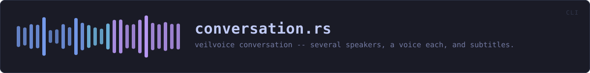

crates/veilvoice-cli/src/conversation.rs
veilvoice-cli · 360 lines · read the source
veilvoice conversation -- several speakers, a voice each, and subtitles.
The command-line front end to veilvoice_conversation. That crate holds the plan, the renderer and the honest account of what a conversation keeps; this file reads the audio, writes the results and prints what happened.
What comes out
Three files beside the output you name:
out.veiled.wav the audio, one destination voice per speaker
out.veiled.vtt subtitles for a browser
out.veiled.srt subtitles for everything elseThe subtitles are written whether or not anybody wrote down the words. With every voice replaced, a caption track saying who is talking is often the only way to follow a recording at all.
The one warning this command will not let you miss
Audio no turn claims is silenced, never passed through. A gap in the plan is a span nobody assigned to a speaker, so it has not been veiled, and putting it into the result would place a real voice inside a file whose whole purpose is that it contains none. The amount is printed, loudly, because a plan with a hole in it is something to fix rather than something to discover later.
This does not encrypt what it writes
Unlike anonymise, which seals its output at rest by default. A conversation render produces a set of files -- audio and two subtitle tracks -- and the container this project uses seals one thing. Rather than invent a half-answer, the files are written in the clear and the command says so: veilvoice encrypt seals the audio afterwards, and the subtitles hold whatever names were typed and are not veiled by anything.
WHAT THIS FILE CONTAINS
360 lines defining 4 functions (2 public), 0 types and 0 constants. Everything below is read out of the source, so it cannot disagree with the code.
What happens when it runs. These are the ways in: public, and nothing else in this file calls them, so they are what an outside caller reaches first.
inspectline 49 — Show a plan without rendering anything.
reachesload_planrunline 109 — Render a recording according to a plan.
reachesload_plan,with_extension
WHAT CALLS WHAT
The functions this file defines, and the calls between them. An edge means the callee's name appears, called, inside the caller's body — a syntactic reading, not a type-resolved one.
The same graph as Mermaid source
%%{init: {"theme":"base","themeVariables":{"background":"#1a1b26","primaryColor":"#1f2335","primaryTextColor":"#c0caf5","primaryBorderColor":"#7aa2f7","secondaryColor":"#16161e","tertiaryColor":"#16161e","lineColor":"#737aa2","textColor":"#c0caf5","mainBkg":"#1f2335","nodeBorder":"#7aa2f7","clusterBkg":"#16161e","clusterBorder":"#2f3549","fontFamily":"ui-monospace, SFMono-Regular, Consolas, monospace","fontSize":"14px"}}}%%
flowchart TD
n_inspect(["inspect<br/>line 49"])
n_run(["run<br/>line 109"])
n_load_plan["load_plan<br/>line 224"]
n_with_extension["with_extension<br/>line 229"]
n_inspect --> n_load_plan
n_run --> n_load_plan
n_run --> n_with_extension
click n_inspect href "https://github.com/tilas01/veilvoice/blob/main/crates/veilvoice-cli/src/conversation.rs#L49" "open the source"
click n_run href "https://github.com/tilas01/veilvoice/blob/main/crates/veilvoice-cli/src/conversation.rs#L109" "open the source"
click n_load_plan href "https://github.com/tilas01/veilvoice/blob/main/crates/veilvoice-cli/src/conversation.rs#L224" "open the source"
click n_with_extension href "https://github.com/tilas01/veilvoice/blob/main/crates/veilvoice-cli/src/conversation.rs#L229" "open the source"
classDef entry fill:#1f2335,stroke:#7aa2f7,color:#c0caf5
class n_inspect,n_run entry
classDef helper fill:#1f2335,stroke:#bb9af7,color:#c0caf5
class n_load_plan,n_with_extension helperThis site loads no third-party script, so it cannot run Mermaid; the diagram above is the same nodes and edges drawn by the generator instead. GitHub renders the source below directly.
ITEMS
| Item | Line | Documentation |
|---|---|---|
inspect pub fn | 49 | Show a plan without rendering anything. |
run pub fn | 109 | Render a recording according to a plan. |
load_plan fn | 224 | Read a plan, and say where it went wrong rather than only that it did. |
with_extension fn | 229 | Replace the last extension, keeping any .veiled before it. |